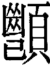
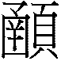
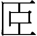

27 頤卦 山雷頤
頤貞吉，觀頤，自求口實。初九，舍爾靈龜，觀我朵頤，凶。六二，顛頤，拂經，于丘頤，征凶。六三，拂頤，貞凶。十年勿用，无攸利。六四，顛頤，吉，虎視眈眈，其欲逐逐，无咎。六五，拂經，居貞吉，不可涉大川。上九，由頤，厲吉，利涉大川。
【卦名】
今本：頤 帛書：頤 歸藏：頤 秦簡：亦 上博簡：頤 清華簡： 海昏：頤
《說文》：「頤，也，象形。凡之屬皆从𦣞。」段注：「、頤也。二篆為轉注。𦣞者古文頤也。」「此文當横視之。横視之則口上口下口中之形俱見矣。」《說文》字段注：「王莽傳作顄，正字也。方言作頷，於說文為假借字。」
依段注，頤原字應該作，字形橫著看就可看出為人的口上、口下，口中之形狀。通顄、頷。
鄭玄：「頤者，口車輔之名也。震動於下，艮止於上。口車動而上，因輔嚼物以養人，故謂之頤。」鄭玄說的口車即下巴，輔為上頷。依鄭玄，頤指的就是人的口頰，引申為養的意思。
頤卦在王家台秦簡中作「亦」，但同簡中蠱卦也作亦。馬國翰輯本歸藏以及帛書都做「頤」，因此卦名仍取「頤」即可，「亦」應視為頤之假借。
清華簡作，應該是頤的異體字。
【卦義】
頤原意是人的口頰，引申為養，頤養。卦義則是修身養性、養生、養德之義。
《序卦傳》：「物畜然後可養，故受之以頤，頤者養也。」因此頤解釋作「養」毫無疑義。但要養什麼？《雜卦》：「頤，養正也。」《彖傳》：「頤貞吉，養正則吉也。」《象傳》：「頤，君子以慎言語，節飲食。」頤卦講的是如何養正，具體來說為「慎言語」以修身養性，「節飲食」以養生健體。
頤卦上下兩個陽爻象嘴唇，中間四個陰爻象口腔，所以取頤的卦義。由此看來頤卦是一個很典型的肖形卦：卦的六爻形狀長得和卦名很像。這一類的卦中最有名的像是鼎卦，噬嗑卦（頤中有物，口中含物），小過卦（飛鳥之象）。
卦象上艮止，下震動，有些類似人的嘴巴咀嚼的動作：上顎是停止的，動的是下巴。又卦象內震動而外艮止，有如人閉關苦練修養一樣，動於內而止於外：外表看來停止不前，但內在其實努力在運作。又艮山於外為養之義，因此頤也有養動於內的意味。
卦象又有動而知止的意思，也就是說一舉一動都要知道適可而止，特別是在飲食和言語這兩項與「嘴巴」有關的事情上。具體來說，話要少講，講話要謹慎，才不會有口舌之災；吃東西要謹慎而節制，小心不要吃壞身體。這也就是《象傳》說的「君子以慎言語，節飲食」。
慎言語者，下震卦為鳴，上艮卦止而養之。節飲食者，震為生機，上艮養之，為養生之義。
就卦序來說，頤卦是繼大畜而來。《序卦》：「物畜然後可養，故受之以頤。」
得頤卦者，以守正居靜為吉，多看少吃，多聽少說，才是養身修德之道。在解全卦吉凶時，也應以此為大原則。也因此，屬「動」（震）的下三爻全部都是凶；屬「靜」（艮止）的上三爻全為吉。
鄭汝諧：頤之上體皆吉，而下體皆凶。上體止也，下體動也。在上而止，養人者也。在下而動，求養於人者也。
頤貞吉，觀頤，自求口實。
- 彖曰：頤貞吉，養正則吉也。觀頤，觀其所養也；自求口實，觀其自養也。天地養萬物，聖人養賢以及萬民，頤之時大矣哉。
- 象曰：山下有雷，頤，君子以慎言語，節飲食。
【今解】
頤養之道以貞定為吉，觀察頤養之道，以求得自己的口養之實。
《彖》曰：「觀頤，觀其所養也；自求口實，觀其自養也。」鄭玄：「觀頤，觀其養賢與不肖也。頤中有物曰口實。自二至五有二坤，坤載養物，而人所食之物皆存焉。觀其求可食之物，則貪廉之情可別也。」依《彖傳》觀頤指的是觀察一個人所養的是什麼人、什麼物。就如天地所養的是萬物，聖人所養的是賢人與萬民。而自求口實則是觀察一個人放到嘴裡的是什麼東西。依鄭玄解釋，如此就可了解一個人的貪廉與品性。
《象傳》說：「君子以慎言語，節飲食。」觀察的目的，是要了解什麼有益，什麼有害，藉以節制飲食，謹言慎行。
孔穎達：若所養是賢，及自養有節，則是其德盛也；若所養非賢，及自養乖度，則其德惡也。
【字義】
自求口實：鄭玄：「頤中有物曰口實。」口實為頤中有物，頤卦為口中空虛，因此說自求口實。
初九，舍爾靈龜，觀我朵頤，凶。
象曰：觀我朵頤，亦不足貴也。
【今解】
捨棄你的靈龜不用，看我大快朵頤，凶。
不知要守靜以畜養自己精神的靈明，反而因為看別人大快朵頤而羨慕不已。若能守靜養之道，則福氣自來，但若是急著要去追求外養，反而自取其辱。
靈龜比喻的是「自養」（自己養自己）的極致典範，因為相傳靈龜只啜飲空氣就能維生，是能夠自養的生物。靈龜也以喻神靈，精神性的資產。捨棄自養之道，捨棄自己的精神資產，反而去看別人大快朵頤，追求外在的飲食之慾，在一旁垂涎而不可得，凶。此為「大快朵頤」的典故。
初九為下卦震卦的主爻，也是第一爻，是所謂的「震動」之主。以剛居陽，當位，而又與六四相應，為何為凶？頤卦以居靜為吉，而初九卻是妄動、始動之爻，因此凶。
【字義】
舍爾靈龜：放棄你自己的靈龜。舍，捨棄，放棄不用。爾，你，指問卦者。靈龜：有兩種解釋。一是把靈龜當做有神靈而能預告吉凶者，即龜卜。如王弼「舍其靈龜之明兆」便是採用此意。又《周易正義》：「靈龜謂神靈明鑒之龜。」二是把靈龜當做一種能夠自養的神聖動物。程頤：「龜能咽息不食，靈龜喻其明智而可以不求養於外也。」蘇軾：「龜者不食而壽，无待於物者也。」朱熹：「靈龜，不食之物。」俞琰《周易集說》：「捨龜之靈能食氣以自養。」王弼說法較符合古代原意，宋儒說法亦可通。
朵頤：大口吃東西的樣子。朵，朵動，上下垂直活動的樣子。朵頤為口頰活動，咀嚼貌。王弼：「朵頤者，嚼也。」程頤：「朵頤為朵動其頤頷。」朱熹：「朵，垂也。朵頤，欲食之貌。」另一解釋認為朵頤指人口若懸河、高談闊論的樣子。
六二，顛頤，拂經。于丘頤，征凶。
象曰：六二征凶，行失類也。
【今解】
顛倒向下求養，違背常理；往高處求養，又所求非人，征凶。
六二陰柔居中又得位，為何為凶？陰爻無以自養，因此需求養於陽，與六二比鄰的是初九，往下求養於初九是為「顛頤」，但六二以柔而乘初九之剛，為逆，違背頤養之常道，因此說「顛頤，拂經」。于丘頤則是指六二向上求養，上卦為艮，為山，因此說丘，上卦能養六二者只有上九，但能與六二相應的只有五，五為陰，六五與六二不相應，故征凶。
總觀六二，有些進退維谷。向下則違背常理而不得養，向上則妄作而凶。
另解：顛倒頤養之道，不肯經營來自北方之國的頤養，出征為凶。
依王弼注，此句應讀作「顛頤，拂經于丘，頤征凶」，意思為，養下而不奉上，違背所當踐履的道義，以此頤養之道而出征，凶。顛頤，養下。拂經，違義。丘，所履之常。
【今解】
顛頤：有多種解釋，一、指六二顛倒向下求養，求養於初九。顛，顛倒，顛倒向下。二、顛頤為向下養賢，王肅：「養下曰顛。」「養下故謂養賢。」三、顛為頂，顛頤即向上求養。四、顛借為填，填頤為滿口食物，貪吃、貪心狀。
拂經：三種解釋。一、傳統解釋為違背常理，違反常道。拂，違背。經，常也。二、經為經營的意思，拂經為不肯經營，不願營生，懶惰的意思。「填頤拂經」意指人好吃懶作。三、拂通弗，為輔弼。子夏傳：「弗，輔弼也。」顛頤為養下，養下以輔弼常經，強化根基基礎。「拂」應作「弗」，《說文》：「撟也。」撟也就是舉的意思，後來弗作為否定辭之用，又以拂字來取代原本的弗。根據段玉裁注，撟應作矯，矯正的意思：「矯各本作撟，今正。撟者，舉手也。引申為高舉之用。矯者，揉箭箝也，引申爲矯拂之用。今人不能辯者久矣。弗之訓，矯也。今人矯、弗皆作拂，而用弗為不，其誤蓋亦久矣。《公羊傳》曰：弗者不之深也。固是矯義。凡經傳言不者，其文直；言弗者，其文曲。如《春秋》：公孫敖如京師，不至而復；晉人納捷葘于邾，弗克納。弗與不之異也。《禮記》：雖有嘉肴，弗食，不知其旨也；雖有至道，弗學，不知其善也。弗與不，不可互易。」
于丘頤：往高處求養。丘，指高處。朱熹：「求養於初，則顛倒而違於常理，求養於上，則往而得凶。丘，土之高者，上之象也。」「丘」帛書作「北」，古文北與丘形近，《說文》：「丘，土之高也，非人所為也，从北从一。一，地也，人居在丘南，故从北。」據《說文》，丘字從北字演變而來，從北從一為丘。于北頤，有來自北方的頤養，如卜辭有：「北土受年」，北方豐收；「北土不其受年」，北方欠收。艮為背（北），因此曰于北頤。後言征凶，言不可出征，出征為凶。依世傳本《周易》，言及方位者只有西、南、西南、東、東北。原本無北方，此或為《周易》有北方之證。賁六五「賁于丘園」，渙六四「渙有丘」，古文于通有。
六三，拂頤貞凶。十年勿用，无攸利。
象曰：十年勿用，道大悖也。
【今解】
違背頤養之道，堅定為凶。或者，違背養正之道，凶。十年都不得用，無所利。
錯誤的頤養之道當然不能堅持，因此說「貞凶」。象曰：「十年勿用，道大悖也。」意指這是完全違背頤養的道理，以致於十年之久亦不可用。六三以柔居剛，不當位，又位於下卦震卦的最上面，也是震動的頂點，違背守靜的頤養之道，因此為凶，且達十年之久。三位多憂，爻變而成互體坎中，因此當居靜不變為宜。
【字義】
拂頤貞凶：兩種讀法，一是「拂頤，貞凶」，違背頤養之道，堅定為凶。拂，違背。二是「拂頤貞，凶」，項安世：「拂頤貞三字當連讀。頤之卦辭曰「頤貞吉」，三之爻辭曰「拂頤貞凶」。卦中惟此一爻，與卦義相反，故曰道大悖也。」
无攸利：無所利，無遠利。沒有任何利益可言。亦可理解為「無所宜」，什麼都不可以做。攸，所、遠。利，利益，或宜。
六四，顛頤，吉。虎視眈眈，其欲逐逐，无咎。
象曰：顛頤之吉，上施光也。
【今解】
顛倒向下求養，吉。如果像老虎捕捉獵物一樣，視線下沉含畜，但欲望自然流露無遺，也是不會有罪咎。
此爻當是兩種可能的判斷：一是顛頤為吉，顛為向下，有謙下而受益之義；二是如老虎般自然樸實，雖然欲望盡露無遺，但純真自然，也不會有罪咎。
【字義】
顛頤：與六二的顛頤同義，都是指向下求養。或者，向下養賢。六二因為柔乘剛，不得養，因此為凶。六四與初九原本就相應，求初九而得養，因此而吉。
虎視眈眈：眈是老虎步行時目光往下看的樣子。六四求養於初九，因此曰「眈眈」。《說文》：「視近而志遠，从目冘聲。《易》曰：虎視眈眈。」帛書本作「虎視沈沈」。《禮記》孔穎達疏：「陰沈能殺，虎，沈殺也。」來知德：「天下之物，自養于內者莫如龜，求養于外者莫如虎。」初九講「靈龜」，六四講「虎」。靈龜是自養的極致典型，而老虎則是求養於外的另一典型。初九捨靈龜的頤養之道不用，為凶。六四雖求養於下，但天真而自然，且又得其養，故或吉，或無咎。
其欲逐逐：《釋文》：「逐逐如字，敦實也。」子夏傳作攸攸。「虎視眈眈，其欲逐逐」帛書作「虎視沈沈，其容笛笛」。「笛笛」通「逐逐」。
六五，拂經，居貞吉，不可涉大川。
象曰：居貞之吉，順以從上也。
【今解】
違背頤養之道的常理，守正居靜則吉，不可以涉水行險。
五是尊位，但柔以居之，不當位。不足以自養，反求諸上，所以說是「拂經」。不過因為以柔承剛（順），與上比應，所以吉。大川，為水，在易經都是比喻「危險」，不可涉大川為不可冒險行事的意思。
「拂經」解釋見六二。
上九，由頤，厲吉，利涉大川。
象曰：由頤厲吉，大有慶也。
【今解】
頤養之道的源頭，艱苦則吉，利於涉大川行險。
上九同時為外卦（艮）及頤卦全卦的主爻，是下方四個陰爻求養的對象，因此曰「由頤」，言頤養之義是由此而來。但以剛居柔，不當位，又養下方四陰爻，責任重大，因此厲。吉者，因為六五陰爻相承（為順），又與內卦的六三相應。而頤卦講的又是居貞守靜之道，上九處艮之頂，又為艮之卦主，是能守靜，以靜制動者，因此為吉。
【字義】
由頤：整卦的頤養之道，是自上九而來，因為上九為頤卦的主爻。由，源由，源頭。豫卦九四亦稱「由豫」。
【彖傳注】
頤貞吉，養正則吉也。觀頤，觀其所養也；自求口實，觀其自養也。天地養萬物，聖人養賢以及萬民，頤之時大矣哉。
頤貞吉，養正則吉也：解釋經文「頤貞吉」。頤為養，貞為正。頤貞吉者，養正則得吉。
觀頤，觀其所養也：解釋經文「觀頤」字義。鄭玄：「觀頤，觀其養賢與不肖也。」所養，指的是君子所養之人。觀察一個人養的都是雞鳴狗盜之徒，還是機智謀士，還是天下萬民，諸如此類的。君子所養，當以正為吉，此後文所言聖人養賢及萬民，才是君子之養正。
自求口實，觀其自養也：解釋經文「自求口實」。鄭玄：「頤中有物曰口實。自二至五有二坤，坤載養物，而人所食之物皆存焉。觀其求可食之物，則貪廉之情可別也。」自養，指的是自己如何求養。觀察一個人如何自養，德行便可知。例如，自肥者貪，有所不取者廉，諸如此類的。侯果：「此本觀卦。初六升五，九五降初，則成頤也。是自求口實，觀其自養。」
天地養萬物，聖人養賢以及萬民：承上「頤貞吉」以及「觀頤」而言。養萬物是天地之養正，養賢以及萬民則是聖人養正之事。